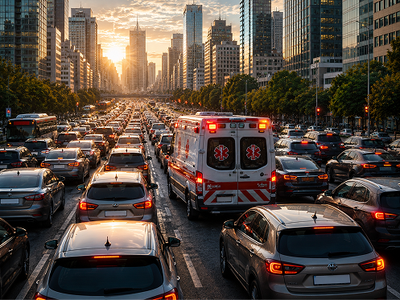
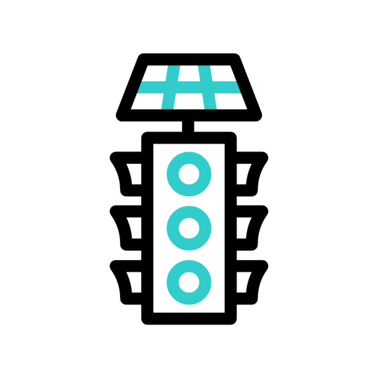

O Problema
No trânsito urbano saturado, cada minuto perdido por uma ambulância reduz drasticamente as chances de sobrevivência do paciente.
Sistemas atuais dependem de aplicativos passivos e sensores locais, que não conseguem liberar o tráfego com antecedência.